この記事は Chromium Browser アドベントカレンダー 24 日目の記事です。
内容の一部は Chromium の Git レポジトリの Source/core/dom フォルダの README ファイル （英語）が元になっています。README の想定読者は Chrome の開発者でしたが、この記事の想定読者は一般の Web 開発者です。この記事の一部は README ファイルに還元（バックポート）する予定です。
この記事は詳細な API の使用方法などには深入りしません。雰囲気で理解するのを目的としています。記事には読者への課題がいくつか含まれていますが雰囲気で理解するにあたって必須ではありません。
課題への解答・記事へのフィードバック・Typo などを発見しましたら GitHub Issue の方へお願いします。
DOM
DOM は Web の基本です。いってみれば Web を構成する原子のようなものです。
個々の DOM オブジェクトは一般にノード (Node) と呼ばれます。たとえばみなさんが今現在見ているこの記事に対して、ブラウザは約 700 個の DOM ノードを生成します。大規模な Web サイトはより多くのノードから構成されています。例えば YouTube のトップページは現在 約 3,000 個のノードから構成されています。
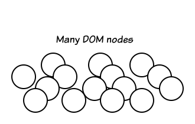
各 Web サイトが何個のノードからできているのかを確認するには querySelectorAll などの API が使用できます。ブラウザの DevTools Console 上で以下のコードを貼り付けて実行してみましょう。ノードが何個あるかわかります。
console.log(document.querySelectorAll('*').length);
DOM はばらばらに存在していません。ブラウザ内部ではノードは木構造 (ツリー: Tree) を構成します。DOM ノードから構成される木のことをノードツリー (Node Tree) と呼びます。
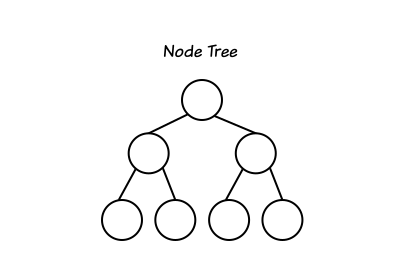
例: HTML とノードツリー
たとえば以下のような HTML
<html>
<head>
<link style='hello.css'>
</head>
<body>
<div>hello</div>
<p>world</p>
</body>
</html>
を読み込んだ結果、ブラウザは以下のようなノードツリーを内部に構築します。
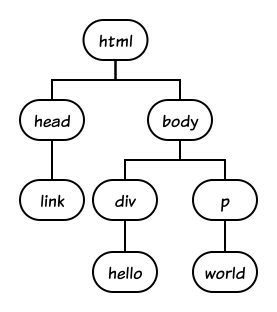
Chrome におけるノードツリーの実装
ツリー (Tree) はコンピュータサイエンスにおいて頻出するデータ構造です。ツリーをどのように実装するかは状況によって異なります。例えば:
- 子ノードから親ノードへは辿る必要がないため、親ノードへのポインタはもたない
- 親ノードにはすべての子ノードへのポインタを持たせる
などの選択肢があるでしょう。
Chrome のノードツリーの実装は以下のようになっています。
1. 各ノードは親ノードへのポインタ parent をもっています。
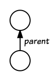
2. 各ノードはすべての子ノードへのポインタはもっていません。もっているのは 2 つだけ、firstChild (最初の子供)・ lastChild (最後の子供）へのポインタをもっています。
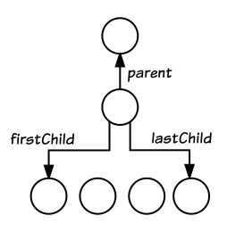
3. その代わり各ノードは兄弟 (Sibling) ノードへのポインタ previous と next
をもっています。つまり兄弟ノードは Linked List (連結リスト）として実装されています。
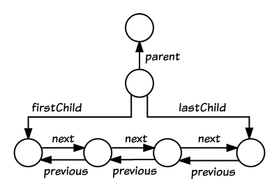
合計すると各ノードには 5 つ (parent, firstChild, lastChild, previous,
next) のポインタがあります。
このツリーの表現により Web で標準で利用できる多くの DOM API は定数時間 O(1) で実装が可能です。
課題 1: あなたが Chrome の開発者になったとしましょう。以下の DOM を操作する API:
- ParentNode.append(node): node を parentNode の lastChild として追加
- ChildNode.before(node): node を childNode の前 (previous として) に挿入
- ChildNode.remove(): node を Tree から削除
をそれぞれどのように実装しますか？ どのノードのどのポインタの更新が必要になるでしょうか？ それぞれの API の動作はリンク先の MDN のドキュメントを参照してください。
ここでは実際に実装する必要はありません。擬似コードで十分です。
countNodes は「手作業」でノードツリーをトラバースしてツリーに含まれるノードの個数を数えます。ツリーに含まれるノード数を N とした場合、countNodes(document) は実行時間が O(N)ではなく O(N^2) 時間がかかる可能性があります。それはなぜでしょうか？
Node.childNodes の動作についてはリンク先の MDN のドキュメントを参照してください。
function countNodes(node) {
let count = 0;
for (let i = 0; i < node.childNodes.length; ++i) {
++count;
const child = node.childNodes[i];
count += countNodes(child);
}
return count;
}
console.log(countNodes(document));
countNodes(document) の結果、得られるノード数は querySelectorAll('*').length で得られる結果と同じでしょうか？ もし大きな違いがあるならそれはなぜでしょうか？ （注: これは少し意地悪な問題です。思いつかないときは飛ばしてかまいません）
countNodes() を改良しましょう。node.childNodes を使用することなく「確実に」実行時間 O(N) でツリーをトラバースする関数に修正してください。必要に応じて Node の Web API を参照してください。
この記事を読むかもしれない Chrome 開発者へ
Blink 内部では C++ でこのように手作業でツリーをトラバースする必要はありません。Source/core/dom 内の NodeTraversal, ElementTraversal に用意されている抽象化された C++11 の Range-Based for loop を使用しましょう。手作業でツリーをトラバースする場合と比較して余分なオーバーヘッドはありません（ゼロコスト抽象化）。詳しくは、README 内の説明、またはこの CL の Description を参照してください。Microsoft Edge について
今日のほとんどのモダンブラウザでは DOM はブラウザ内部ではツリーで表現されます。しかし Microsoft Edge はそうではありませんでした。Edge は歴史的な理由により Microsoft Word などのいわゆるドキュメントビューアで採用されることの多いデータ構造を採用していました。このデータ構造では近年の DOM の進化、特に Shadow DOM に対応することが難しく、Edge はそのためここ数年大幅なアーキテクチャの変更に取り組んでいました。詳しくは Modernizing the DOM tree in Microsoft Edge を御覧ください。Hash Map (ハッシュマップ: 連想配列)
ブラウザはユーザーからのクエリに素早く答えるためツリーに関するさまざまな「情報」を別途もっています。
たとえば getElementById() は指定された id を持つノード（正確にはエレメント）を返す DOM API です。
例: 属性 id=foo をもつエレメントを返す
> document.getElementById('foo')
=> <div id=foo></div>...
ブラウザはこの DOM API が呼ばれるたびに該当 id をもつエレメントを見つけるために毎回ツリーをトラバースしているわけではありません。ブラウザは id とノードの対応表を別途持っています。そのため document.getElementById() は定数時間 O(1) で応答可能です。
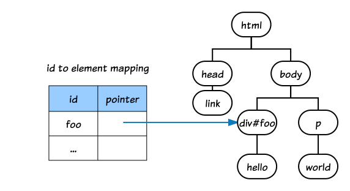
これはほんの一例です。その他にもたくさんのツリーに関する情報を「キャッシュ」として持っています。ただしいたずらになんでもデータ構造を用意すればよいというものではありません。時間と空間のトレードオフについては常に慎重に検討しなければいけません。
document.getElementById(id) に相当する JavaScript の関数 myGetElementById(root, id) を自分で作成してください。その際、普通に JavaScript の Object をハッシュマップとして使用してもよいですが、比較的新しい API である
Map を使用してもよいでしょう。
function myGetElementById(root, id) {
// ...
}
myGetElementById(document, id);
同じ id が複数ある場合
同じ id をもつエレメントがツリー内に複数ある場合は Tree Order の順番で最初に見つかるものが優先されます。そのため Chrome 内部では id とエレメントの対応表は単純な HashMap ではなく TreeOrderedMap で管理しています。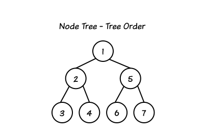
この記事はほぼ静的ページです。最初に記事が読み込まれた後はツリーの構造は一部を除いて変化しません。それに対して多くの Web ページの内容は動的に更新されます。つまりブラウザ内部で保持しているノードツリーの構造は常にアップデートされています。そのためツリーに関する情報もなんらかのタイミングでアップデートする必要があります。ユーザーに古い情報にもとづいた間違った結果を返すことは許されません。
Super Tree (スーパーツリー)
ここまでは従来の Web でした。この状況は Shadow DOM の出現とともに様子を変えることになります。
Shadow DOM の詳細はこの記事ではカバーしません。ここではできるだけ簡潔に述べます。
（一定の条件を満たす）すべてのエレメントはエレメント「内部」に別のノードツリーを「ホスト」できるようになりました。いままで Web の世界を構成する最小構成単位であった エレメント（原子）はその内部にもうひとつの世界をもつことができます。
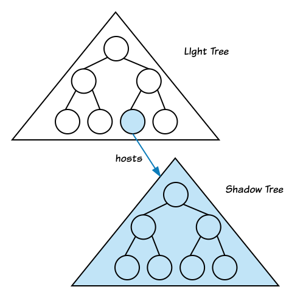
ホスト側（外側）のツリーは Light Tree (光のツリー)、ホストされる側のツリーは Shadow Tree (影のツリー）と呼ばれます。
外側の世界と内側の世界は本質的な違いは存在しません。つまり Shadow Tree は同時に Light Tree にもなります。光と影はあくまで相対的な概念です。外側の世界と同様に、内側の世界の各エレメントもそれぞれ内部にもうひとつの世界をもつことができます。この世界は何段にもネストできます。
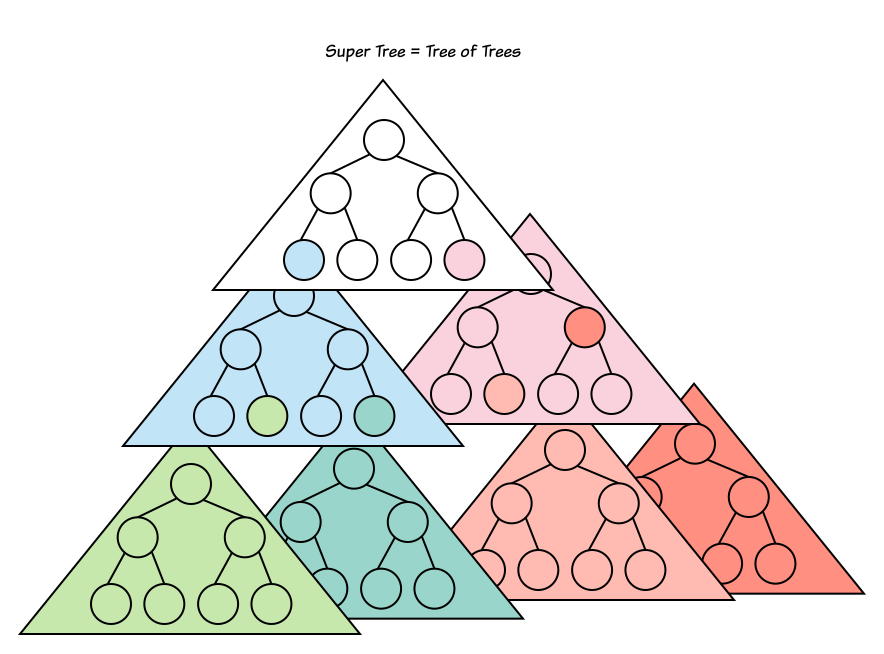
モダン Web においては世界はノードのツリーから構成されるのではなく「ノードツリーのツリー」(= Super Tree) から構成されます。あなたが見ている世界・つくっている世界は実は上の世界を構成するほんの一部分にしかすぎないかもしれませんし、あなたが利用しているエレメントの内部には膨大な世界が広がっているかもしれません。
Shadow DOM の実装状況
Chrome と Safari はすでに実装済み。Firefox も現在実装中です。Edge も DOM のアーキテクチャの刷新後に実装開始予定です。
例: Chrome での利用例
動画の再生に使用する
<video> エレメントは Chrome は Shadow DOM を使用して実装しています。Web 開発者は <video>
エレメントの中にもうひとつの世界が広がっていることを知る必要はありません。むしろ「知らなかった」という事実はうまくカプセル化が成功している証拠です。
他にも <input> エレメントなど多くのエレメントは Chrome 内部では Shadow Tree を使って実装されています。
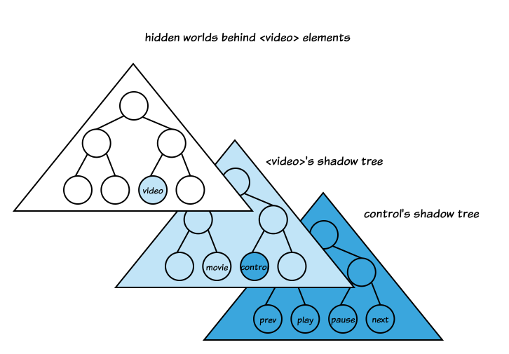
video エレメントが絵のように実装されているとは限りません。Shadow Tree 内の変更は Web 開発者に影響を与えません。Web を壊すことなく Chrome はいつでも実装を変更できます。
Divide and Conquer (分割統治)
さきほど出てきた id とエレメントの対応表はそれぞれのノードツリーごとに存在します。そのほか、たとえば各ノードツリー内に定義された CSS のルールなどもそれぞれのノードツリー単位で独立に管理されます。これらのルールの適用範囲はそれぞれのノードツリーのみであるため、サーチやマッチングの対象を大幅に限定できます。
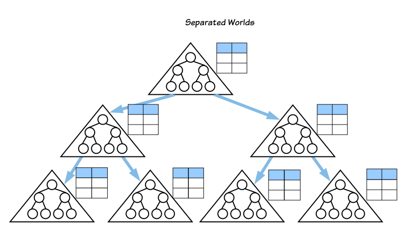
この記事を読むかもしれない Chrome 開発者へ
Chrome 内部ではノードツリーのルートであるDocument クラスと ShadowRoot クラスが共通の TreeScope を実装しています。多重継承です。TreeScope がツリーに関する情報をもっています。
CSS の話がでてきたので次は CSS セレクタのデータ構造とマッチングアルゴリズムについて簡単に説明します。
CSS
少しの間 CSS に話を脱線しましょう。CSS の 各セレクタは Chrome では Linked List として表現しています。たとえば以下の CSS のルール:
a b .foo {
color: red;
}
内に含まれる CSS セレクタ "a b .foo" は以下のように表現されます。
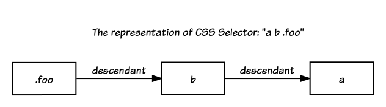
CSS ルール上では一番右に表記される .foo がリストの先頭であることに注意してください。Chrome 内部では CSS セレクタは Right-to-Left (右から左）の順番で Linked
List として表現されます。双方向リストではなく片方向リストです。
この記事を読むかもしれないChrome開発者へ
CSS セレクタは最終的には Linked List として表現されますが、データの局所性を高めるため（CPU キャッシュに載りやすくするため）、なるべく隣接するノードは近くのメモリ領域にアロケートされるように CSS をパースするときに工夫しています。CSS をパースするのは一回ですがその後のセレクタマッチングは何回も起きうるためこれらは十分割に合う最適化です。
CSS セレクタマッチング
一部の特別な CSS ルールを除いてマッチングの処理はそれぞれのノードツリーで独立に行えます。
それぞれのノードツリーにおいて CSS セレクタとエレメントのマッチングは:
- CSS セレクタは Right-to-Left
- ツリー内のエレメントは (基本的には) Bottom-to-Top
の順序で行います。
例:
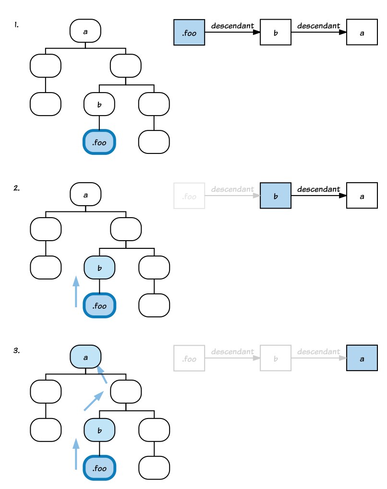
このように愚直にマッチングしていると Backtracking (バックトラッキング) が何度も発生してマッチングにかかる時間が O(2^N) (指数関数時間) になると思われるかもしれませんが、実際は数々の最適化・ヒューリスティクルールにより現実時間で終わるようになっています。
そのうちのひとつ Bloom Filter をここでは紹介します。
例: Bloom Filter (ブルームフィルタ)
ブルームフィルタは確率的データ構造です。ある程度の False Positive (偽陽性）を受け入れることで極めて省スペースで「存在するかしないか」をチェックすることが可能です。詳しい説明はここでは省きます。Wikipedia を参照してください。
Chrome では CSS セレクタフィルタ core/css/SelectorFilter 内でブルームフィルタを使用しています。
例えば id 属性を使用してフィルタを行う場合は、セレクタ内に登場する id をもつエレメントがツリーの先祖に「存在するかしないか」のチェックにブルームフィルタが使用できます。多くのケースでは「存在しない」ことが確実にわかるため早期にセレクタマッチングを終了することが可能です。False Positive (偽陽性）レートは、仮にユニークな id が 100 あるとして 12 bits のスロットを使用することで、0.2% まで落とすことができます。
ブルームフィルタは Chrome では CSS セレクタマッチング以外にもマルウェアサイトの検出などでも使用しています。
selector としてどのようなものが指定可能かはおまかせします。まずは例のように タグネームの配列のみでやってみましょう。
function selectorMatch(selector, node) {
// ...
}
console.log(selectorMatch(['div', 'p', 'p'], getElementById('foo')));
Event (イベント)
Super Tree に戻りましょう。一部の
DOM Event (イベント) は Super Tree を駆け抜けてディスパッチされます。たとえば下図のノード 1 がクリックされたとしましょう。
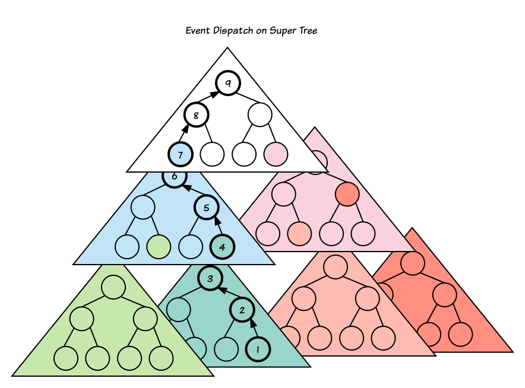
このとき、イベントの Bubbling フェーズでは:
- 緑のノードツリー:
1->2->3の順 - （その後）水色のノードツリー:
4->5->6の順 - （その後）一番上のノードツリー:
7->8->9の順
イベントがディスパッチされます。この際、カプセル化を壊さないようにイベントが下の世界（Shadow Tree)で起きたとしても、あたかも自分の世界 (Light Tree) で起きたかのようにブラウザはイベントを「書き換えます」。たとえば、水色のノードツリーではあたかもノード 4 がクリックされたかのようにユーザーからは見えます（ event.target
の値が ノード 4 にアジャストされます）。
例: Tweet 埋め込み
Twitter が提供するツイートを埋め込みためのコードは、内部で Shadow DOM を使用しています。ツイート埋め込みコードは<twitterwidget> エレメントを生成しますが、実際の表示はすべて shadow tree 上で行われます。
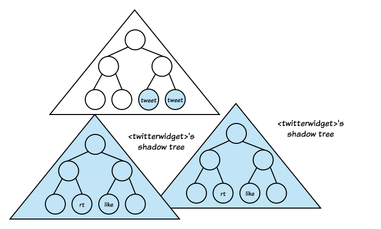
<twitterwidget> がホストする shadow tree 内のどこかのノードがクリックされたとしましょう。このとき:
<twitterwidget>エレメントの実装者（つまりここでは Twitter のエンジニアのことです）はクリックされたのが「RT ボタン」かあるいは「Like」ボタンかどうかを知りたいでしょう。<twitterwidget>エレメントのユーザー（つまりツイートを埋め込みたいページの作者）から見た場合はそこまでの詳細は興味がないです。他の普通のエレメントと同様に<twitterwidget>エレメントそのものがクリックされたことだけ知ることができれば十分でしょう。
もし詳細が知りたいのであればクリックイベントといったローレベルなものを通じて知るのは極めてよくない API デザインです。必要に応じて抽象的できちんと定義されたインターフェース（たとえばカスタムイベント）を通じて伝えるべきです。
一部のイベントはそもそも上の世界に伝える必要がありません。たとえばページを訪れているユーザーがマウスを shadow tree 内のあるノード A からあるノード B に動かしたとします。このとき <twitterwidget> エレメントの実装者はこの mousemove イベントを拾いたいと思うかもしれません。一方 <twitterwidget> エレメントのユーザーから見た場合マウスはエレメントの内部を移動しているだけです。イベントは上の世界に伝える必要はありません。
Event.composedPath() API が使用できます。
例: 関連ターゲット (relatedTarget) をもつイベント
下の図でマウスポインタがノード A から ノード B に移動したとしましょう。
このときは以下のように mousemove 関連のイベント はディスパッチされます。
-
緑のノードツリー:
B->2->3の順。このときイベントのプロパティ:event.relatedTargetはAではなくCevent.targetはB
すわわちこのノードツリーではマウスが
CからBに移動したとみなされます。 -
（その後）水色のノードツリー:
4->5->6の順。このときイベントのプロパティ:event.relatedTargetはAではなくCevent.targetは4
すなわちこのノードツリーではマウスが
Cから4に移動したとみなされます。 -
（その後）一番上のノードツリー: イベントはティスパッチされません。
Event Re-Targeting (イベントリターゲティング） / ノード間の関係の判断
このようにブラウザはイベントをあたかも自分のノードツリー内だけで起きたかのようにユーザーに見せるためさまざまなアジャストをおこないます。これをリターゲティングと呼びます。イベントディスパッチの際にリターゲティングを素早く行うためにはツリー上でのノードの先祖・子孫関係 (Ancestor-Descendant relationships) を何度も判断する必要がでてきます。
例として次のようなノードツリーに対しては:

- A は B の先祖 ? -> Yes
- B は A の先祖 ? -> No
- A は D の先祖 ? -> Yes
- B は F の先祖 ? -> No
等が成り立ちます。
function isAncestorOf(ancestor, descendant) {
// ...
}
console.log(isAncestorOf(a, b)); // -> true
console.log(isAncestorOf(b, a)); // -> false
console.log(isAncestorOf(a, d)); // -> true
console.log(isAncestorOf(b, f)); // -> false
isAncestorOf は素直に実装すると O(N) かかることでしょう。
ノード間の関係の判断 / O(1)
isAncestorOf は少しの工夫で定数時間 O(1) で答えることができるようになります。ただし以下の条件が必要です。
- イベントの開始前に事前にツリーを 1 回だけトラバースしてもよい
- 一時的に O(N) のメモリを消費してもよい
イベントディスパッチの開始前にツリーをトラバースして各ノードに以下のように 2 つの番号をつけることにしましょう。
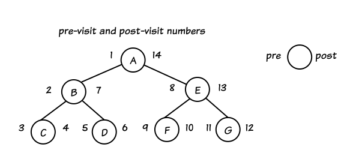
これらの 2 つの番号 (pre と post) を利用すれば「A は B の先祖でしょうか？」という問いには、
A.pre < B.pre && B.post < A.post
の条件をチェックするだけで済みます。これは定数時間 O(1) で判断できます。
isAncestorOf を 実行時間が O(1) になるように改良してください。メモリはいくら使用してかまいません。どれくらい速度が改善したか計測してください？もし速度が改善しないようならなにが原因が考えてみましょう。
最適化するべき？
最適化の教訓として有名なものに「時期尚早な最適化は諸悪の根源である」があります。この文は残念なことに文脈から切り離されて使用されることが多いです。
幸いなことに Chrome はユーザー数が多いため、最適化のための人的コストをかけてもよい場面が多々あります。
例として、さきほどのイベントディスパッチを早くする実際の CL を見てみましょう。平均的なツリーに対しては 1 イベントあたり 0.1 ms ほどしか早くなりません。たかだが 0.1 ms 早くすることにソフトウェアエンジニアが数時間をかける価値はあるでしょうか？
大雑把に最適化の効果を計算してみましょう。
- Chrome のアクティブユーザー数: 1,000,000,000 (= a)
- 1 ユーザーあたりの1日あたりの平均 Web サイト閲覧数: 100 / day (= b)
- 1 Webサイトあたりの重みを考慮した平均発生イベント数: 1,500 (= c)
- 1 イベントあたり節約できた時間: 0.1 ms (= d)
合計すると 1 年あたり a * b * c * d * 365 = 5475 兆 (ms)。すなわち地球上から毎年 5475 兆 ms (== 約 15 億時間) を節約できたことになります。その分バッテリーの消費も少なくなり二酸化炭素の排出量も少なくなるでしょう。十分に価値があるといえます。ブラウザのレンダリングエンジンは Chrome だけではなく WebView あるいは Visual Studio Code や Atom などの Electron アプリでも使用されていますので、この数字はもっと大きいかもしれません。
レンダリング
Super Tree はそのままではレンダリングできません。「ツリーのツリー」 をひとつの「ツリー」に合成する必要があります。そのことを 「Flattening （平らにすること）」と呼んでいます。レイアウトのために平らになったツリーは Flat Tree （フラットツリー）と呼ばれます。
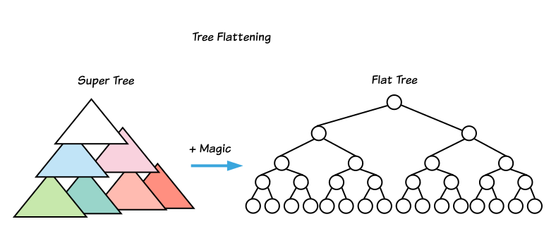
Flattening のための詳細なデータ構造とアルゴリズムについては・・・もう十分でしょう。魔法すぎるので省きましょう。
ひとついえることは現在 Chrome は Flat Tree はメモリ上には物理的に保持していません。Flat Tree はあくまでコンセプト上に存在する仮想的なツリーであり、レイアウト時に仮想的に作成されます。
Incremental Shadow DOM
現在、Flat Tree のつくりかたを根本的に改善する新しい魔法 (Incremental Shadow DOM) を開発中です。そのため現代の魔法は古の魔法になってしまうでしょう。
まとめ
この記事は主にデータ構造とアルゴリズムを通じて DOM と Shadow DOM を雰囲気で理解することを目的にしました。課題に実際に挑戦してみた人は「エンジンの外側」の環境である JavaScript で問題を解く際に何かと不便に感じることが多かったと思います。「エンジン内部の情報やエンジンがもっているデータ構造を利用できればはるかにいろいろなことができるのでは？」と感じたかもしれません。それはとても正しいことです。それこそがエンジン内部をハックする動機です。
明日の Chromium Browser アドベントカレンダー 最終日は実際のソフトウェアエンジニアリングにフォーカスした「Web のつくりかた: ソフトウェアエンジニアリングと雰囲気で理解する Web 標準とブラウザのつくりかた」です。お楽しみに。